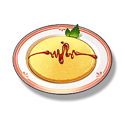

Yolk Pastry
Supplies

Increase the attack power of all Resonators in the team by 24% for 30 minutes, only effective for your own Character in multiplayer games.
A pure golden cake made with a lot of egg yolks, it can maintain its crisp taste even in a humid environment. You can eat it with confidence at any time.